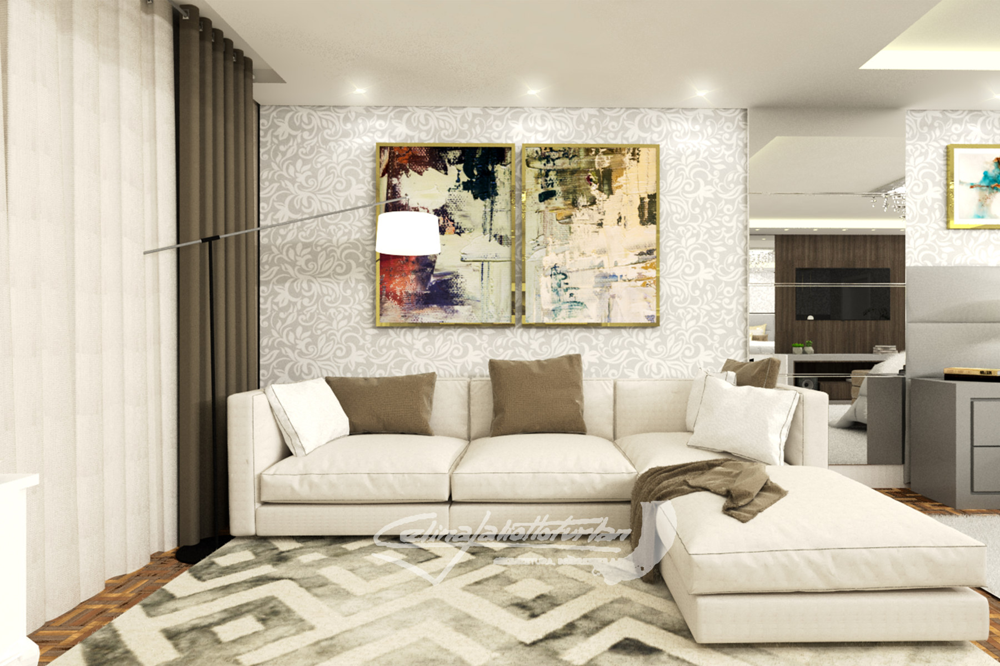
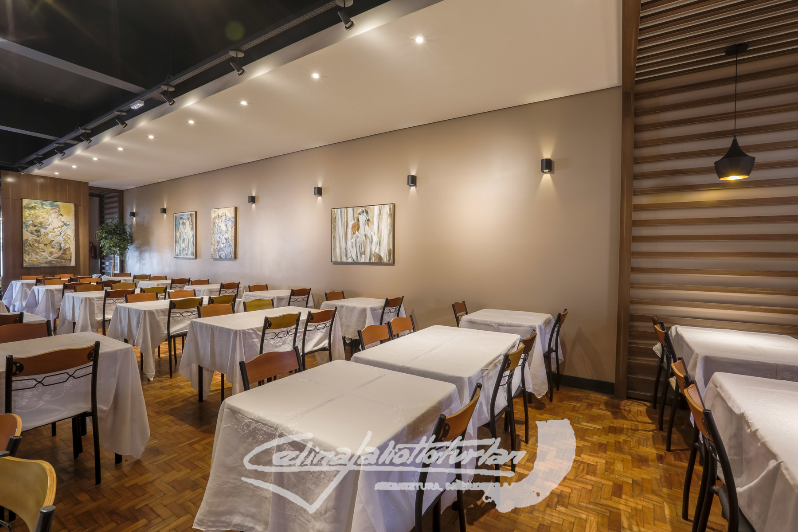

Celina Galiotto Furlan
Arquiteta, urbanista e designer, CAU A8.345-3, com marcante atuação no mercado há 43 anos.
Quem sou
Arquiteta, Urbanista e Designer, CAU A8.345-3, com marcante atuação no mercado há 43 anos, pós-graduada em Intervenção, Pesquisa e Ensino em Nível Superior em Arquitetura e Urbanismo e especialista em Design de Móveis.
Sócia-fundadora da Associação Sala de Arquitetos, Caxias do Sul, RS. Atuou como Vice-Presidente e depois Presidente desta Associação por duas gestões. Participou como Vice-Presidente, por 4 anos, do SEAAQ, Associação de Engenheiros, Arquitetos, Agrônomos, Químicos e Geólogos de Caxias do Sul, RS.
Permanentemente conectada às novas tendências e tecnologias, assina projetos de arquitetura civil e de interiores nos segmentos residenciais, comerciais e corporativos, em várias cidades do estado e do País.
Expõe elaborados projetos de interiores em Mostras de Arquitetura, tais como Sala de Arquitetos, Casa e Cia Serra e CASACOR-RS.
Projetos
Arquitetura civil e de interiores nos segmentos residenciais, comerciais e corporativos.



